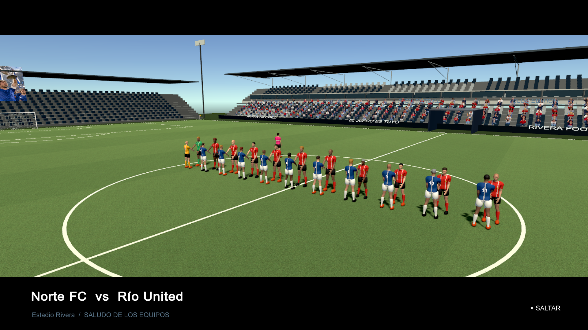

AVENTURA · PC
✧
PRÓXIMAMENTE
GRACIANO GAMES · ESTUDIO INDEPENDIENTE
Creamos experiencias de juego con mundos que invitan a explorar, competir y descubrir algo nuevo en cada partida.
GRACIANO GAMES · EXPERIENCIAS ORIGINALES
NUESTROS MUNDOS
Elige una aventura, mira sus capturas y prepárate para jugar.
PRÓXIMAMENTE

RIVERAEN DESARROLLO
DISPONIBLE PARA PROBAR
EL ESTUDIO
En Graciano Games creemos que cada juego debe tener algo inesperado: un lugar que quieras visitar, una mecánica que quieras dominar o una historia que quieras compartir.
HABLEMOS